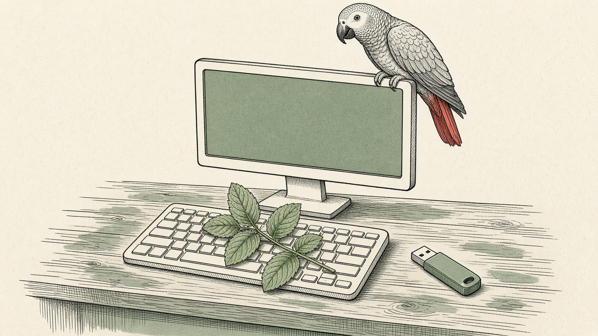

Four steps. Your machine. Your notes. The familiar can teach the order. He does not keep your papers.
Mac, or a computer that already runs: download Ollama first. Skip Linux Mint.
New PC: download Linux Mint first, install it, then Ollama.
1
Linux Mint

This is the system for a new PC. Download the current Cinnamon edition and write it to a USB before any other app. A Mac already has a system, so this step is not for a Mac.
This is the first app on a Mac, and the first app after Mint on a PC. It runs the models on this computer. This step does not send your notes anywhere.
Use the writing model at temperature 0.3. Start Ollama with a 64K context. Its own default is too small.
OLLAMA_CONTEXT_LENGTH=64000 ollama serve
4
Obsidian
Download it after the models. Make a vault on this computer and keep the notes as markdown. Leave Sync off. The vault is yours. It is not the church archive.
Do not download a copy of the house bot, and do not put these notes in anyone else's library. Telegram is how a member talks with the familiar. It is not one of the four downloads, and the familiar does not keep your vault.